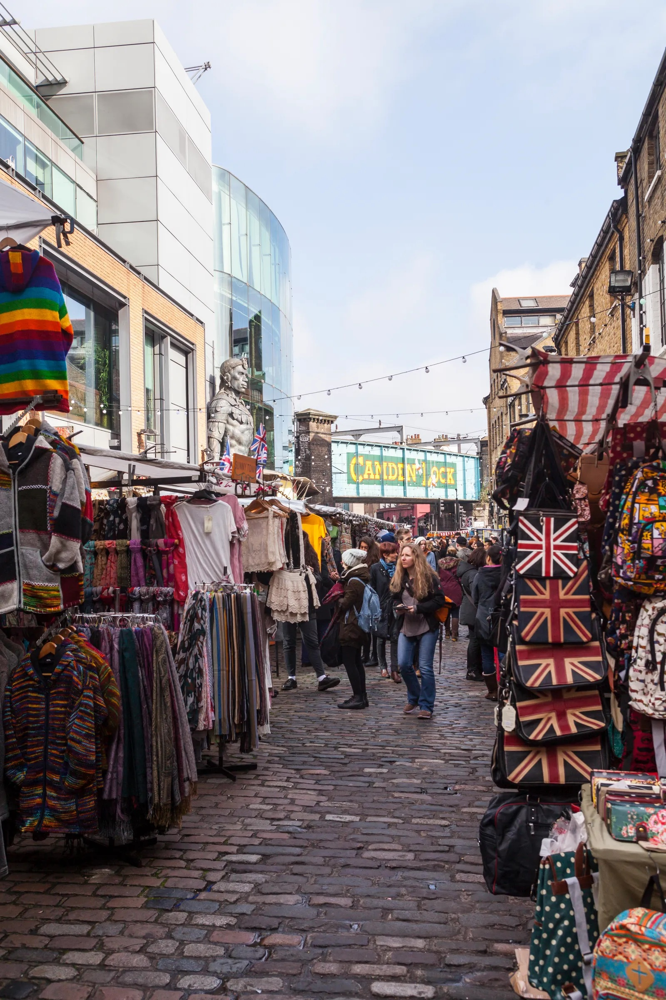
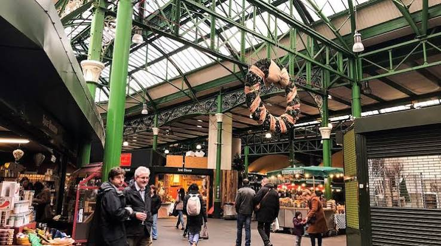
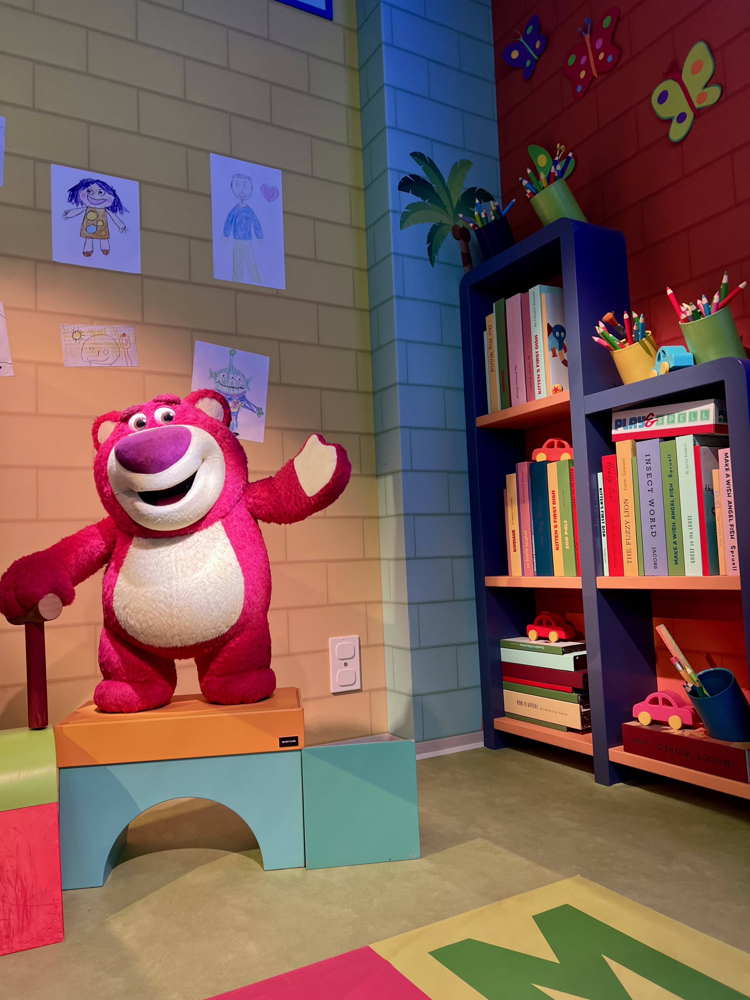
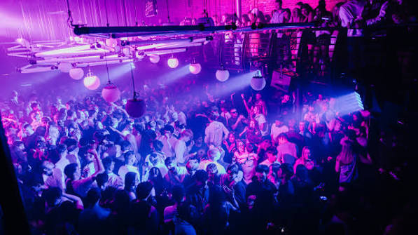

Intressen
Jag har som sagt flera intressen men vad jag kommer ta upp här är är mitt favoritresemål, London.
London är en av mina favoritstäder och jag har besökt den flera gånger. Jag har varit där med familj, vänner och partner. Varje resa har haft olika syften, allt ifrån en lugnare familjeresa till att vara ute och festa på klubbar med vänner, London har allt.
Favoritaktiviteter i London
Jag kommer ta upp mina favoritaktiviteter i London som jag hittills uppvelvt.
| Aktivitet | Beskrivning | Bild | Länk |
|---|---|---|---|
| Shopping | En av de bästa shoppingstäderna i världen. Det finns allt från lyxiga butiker till vintagebutiker och marknader. Jag älskar att åka runt till olika delar i London och besöka marknader. |
 |
Marknader i London |
| Mat | London har en mångfald av restauranger och matställen. Jag är inte så förtjust i den traditionella engelska maten men London erbjuder otroliga matmarknader med mat från hela världen. En av mina favoriter är Borough market. |
 |
Borough market |
| Sevärdheter | London har många kända sevärdheter som Big Ben, Buckingham Palace och museer. En personlig favorit är Mundo pixar museum som jag besökte sist jag var i staden. Det häftiga med museet är att det är uppbyggt på det sättet att man själv är en del av filmerna. |
 |
Mundo pixar museum |
| Nattliv | London har ett stort utbud av nattliv och klubbar. Jag har varit på flera klubbar i London och det är alltid en upplevelse. Det finns klubbar för alla smaker och musikstilar. |
 |
Nattliv i London |